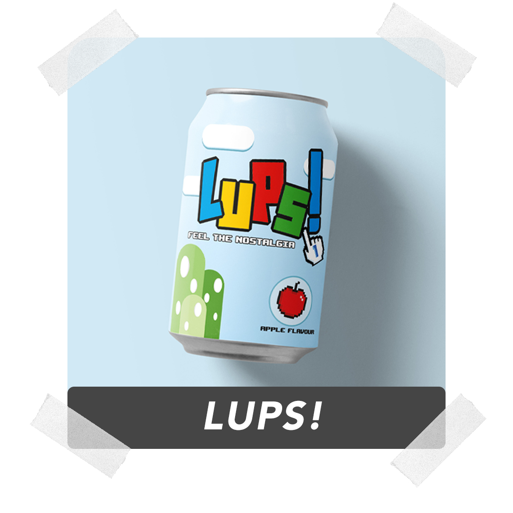
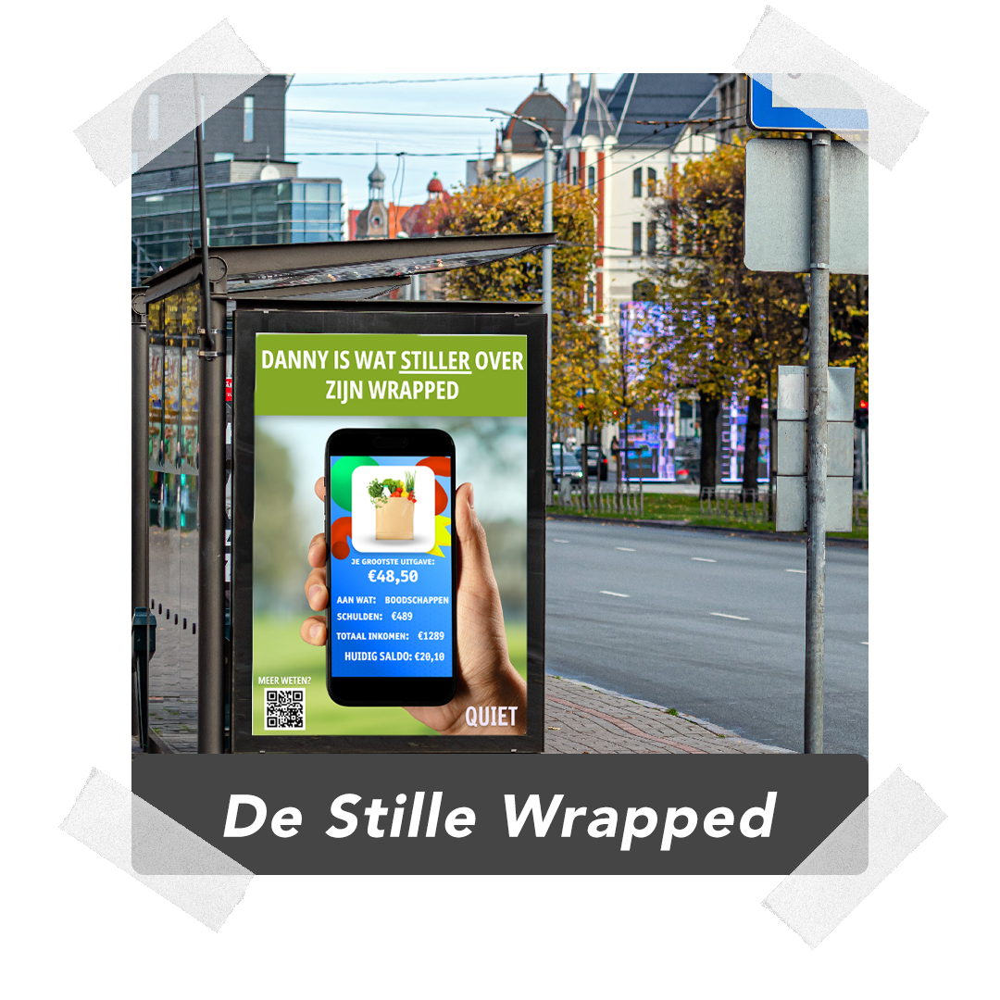
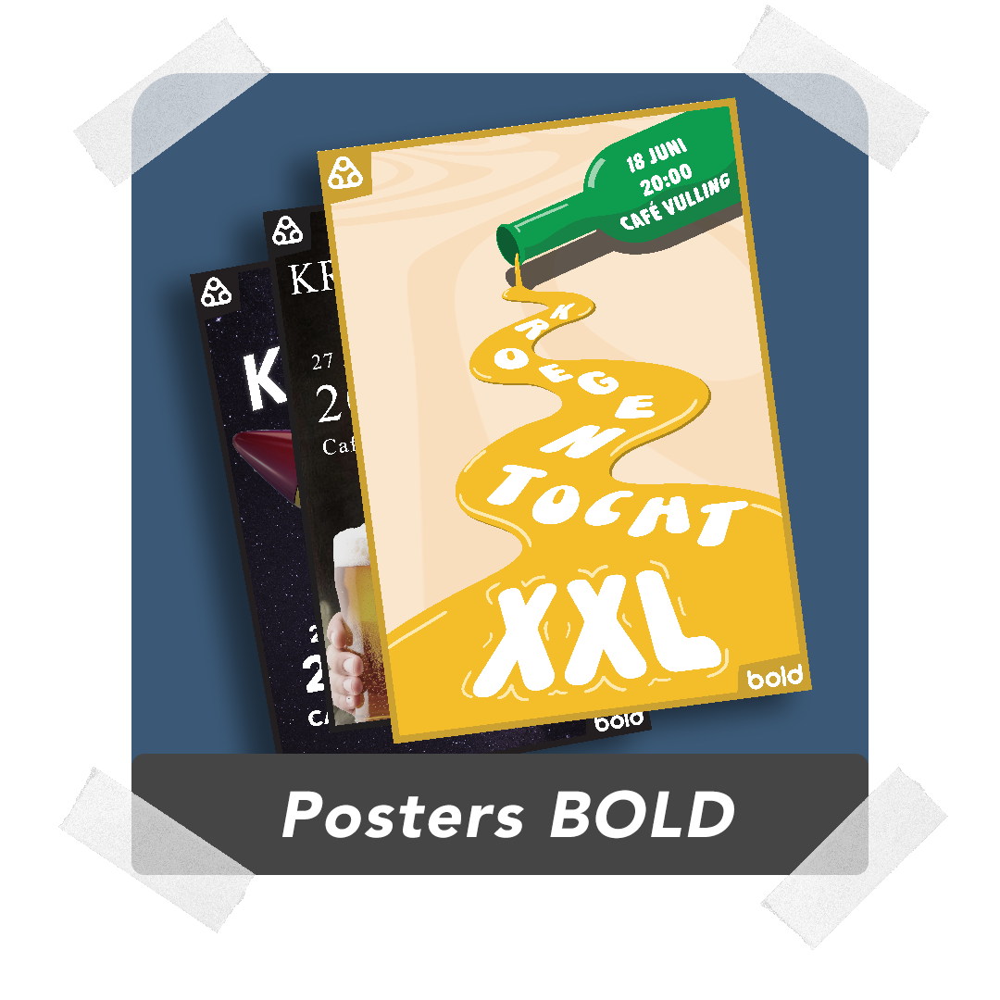
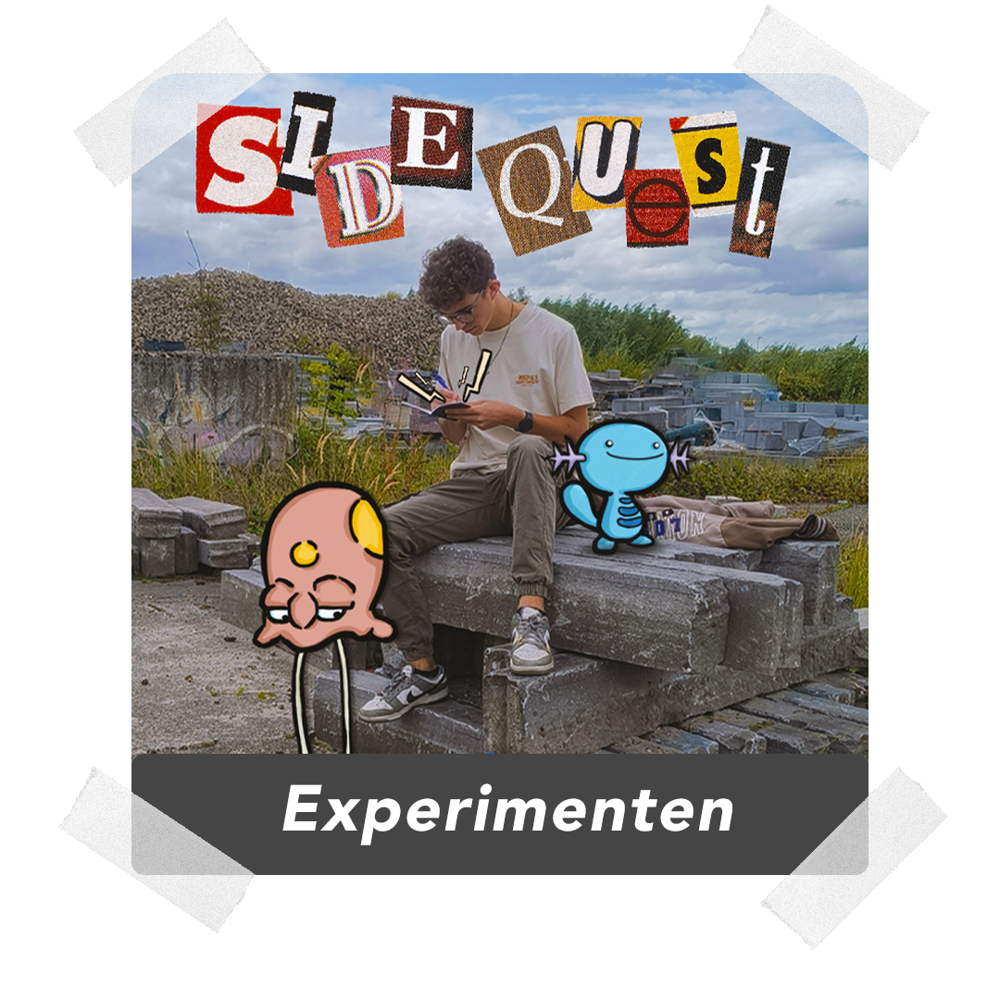

Sinds jongs af aan ben ik altijd al geïnteresseerd geweest in verhalen en in verhalen bedenken. Zo is dat ook gegroeid in interesse voor kunst, en in ontwerpen van andere makers. Wat is het verhaal achter het werk, en wat vertelt het werk? Dat is iets wat mij fascineert, en ik graag meeneem in mijn werk.
Ik vertel dus graag verhalen in mijn werk, en zo probeer ik vaak mijn eigen interesses en interpretatie te stoppen in een opdracht, waar ik mij natuurlijk ook hou aan de verwachting van de opdrachtgever.
Voor mijn werken gebruik ik zowel digitale programma’s als fysieke materialen, zoals potlood en papier. Ik lever graag kwaliteit, en ben ambitieus als het gaat om wat ik maak.
Photoshop, Illustrator, InDesign, Premiere Pro, Bandlab





Wil je contact opnemen? Stuur gerust een berichtje! dan praten we verder.
Email: samversprille84@gmail.com
Instagram: @Sammetje096
Linkedin: Sam Versprille